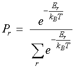
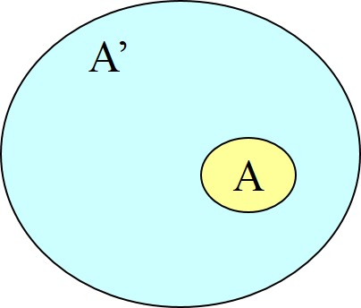
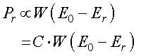
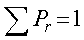
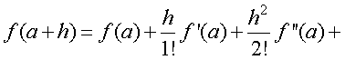
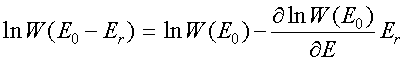
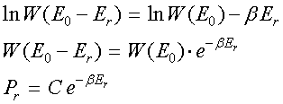
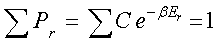
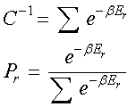

ボルツマン分布，よく聞く言葉ですが，これは，
気体分子などの分子が取り得るエネルギー分布
を表し，その状態は，

と指数関数となります．つまり，
エネルギーが高い状態の分子は少ない
こととなります．
たとえば，
大気中の分子の濃度分布は地面に低いほど高い（位置エネルギーが小さいので）
大気中の分子の運動において，平均速度は指数関数分布となる
などがあります．
では，どのように導出するのでしょうか？ひとつひとつ考えていきましょう．
まずはある系を考えます．
ある系を考える，と言うことは，それ以外の系は考えない，と言うことです．
つまり，ある系以外とのエネルギーのやりとりはない＝エネルギーはある系の中で保存している，と言うことです．

これは，
ある小さい系，A，が存在する
その周囲に熱浴，A'，が存在する
と言う系で，熱浴A'はとても大きいものと考えてください．つまり，
A << A'
と言うことになります．
ここでの問いは，
系Aがあるエネルギー状態，Er，を持つ確率，Pr，はどの程度か？
を考えていきましょう．
まずは系のエネルギーを考えていきましょう．
閉鎖された系なので，エネルギー保存則が成り立ちます．
E0＝Er＋E'
ここで，
E0：系全体のエネルギー
Er：系Aのエネルギー
E'：熱浴A'のエネルギー
となります．
熱浴A'のエネルギー，E'，はいろいろな状態をとることができます．その数を，
W(E') = W(E0-Er)
としましょう．その取り得る確率，Pr，は，この状態の数に比例します．

となります．当然のことながら，

です．ここで，E0 >> Er，であるので，状態の数，W，をテイラー展開します．
テイラー展開とは，

です．さて，次がミソなのですが，
テイラー展開するのは，状態の数，W，ではなく，状態の数，W，の対数
となるところです．第三項以降は無視して，

となります．ここで，
とおけば，

とある熱浴のエネルギー状態，E'，を取り得る確率，を求めることができます．
規格化するために，

であるので，

となることがわかります．
さて，
熱浴A'のエネルギー，E'，を取り得る確率，Pr，は，そのまま系Aが Er（＝E0-E'），をとる確率ですので，この，Pr，が系Aがあるエネルギー状態，Er，を持つ確率，となるわけです．
と言うことで，その分布は指数関数分布となり，Er，が高くなるほど確率は低くなるわけです．
では．．．．このβとはどう考えたらよいのでしょう？
次ページに行きます．